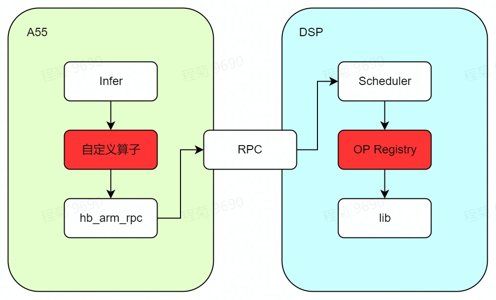

5. DSP开发文档
5.1. DSP简介
地平线J5芯片中包含两个DSP核，时钟频率为648MHz，使用的是Cadence公司的Tensilica Vision P6 DSP IP。
Vision P6 DSP专用于支持计算机视觉或图像处理等算法，超长指令字（VLIW）与单指令多数据流（SIMD）可以很大程度提升计算的速度。Vision P6 DSP采用5路VLIW架构，每条指令最多可以包含两个64字节加载或一个64字节加载和一个64字节存储；SIMD支持512bit的操作，如：64路8位整型，32路16位整型等。更多关于Vision P6 DSP的信息，可参见Cadence的Vision P6 用户手册。
DSP拥有强大的计算能力，在使用得当的情况下，将一些不能用BPU加速且ARM低效的计算部署到DSP上可以大大提高模型的推理性能。
5.2. Linux开发环境安装
5.2.1. 开发工具介绍
Xtensa Xplorer是Cadence为客户提供的针对其DSP进行软件开发的一个集成开发环境，具有软件开发(software development)、编译(compile)、调试(debugging)、仿真(simulation)、性能分析(profiling)、硬件跟踪(hardware trace)等功能。本开发文档中将只介绍Linux开发环境的安装，Windows开发环境的安装使用可参考Cadence提供的官方文档。
5.2.2. 安装DSP工具链以及配置核
您可以从地平线获取DSP开发包，开发包中包含Xplorer-8.0.13-linux-x64-installer.bin和vdsp_vp6_RI4_linux.tgz安装包。
安装 Xtensa Develop Tools
这里我们默认将Xtensa Develop Tools安装在 /opt/xtensa 目录下，您也可以自行指定其他目录。若安装在 /opt/xtensa 目录则需要root权限。执行如下命令：
vdsp_tools/Xplorer-8.0.13-linux-x64-installer.bin \
--mode unattended \
--prefix /opt/xtensa
安装 VP6 Core Configuration
将vdsp_vp6_RI4_linux.tgz安装包解压，解压后将其放在Xtensa Develop Tools安装目录下指定位置（如： /opt/xtensa/XtDevTools/install/builds/RI-2020.4-linux/ ），放到指定位置后进行安装。安装需要执行如下命令：
tar -zxvf vdsp_builds/vdsp_vp6_RI4_linux.tgz \
&& mv RI-2020.4-linux/vdsp_vp6_RI4/ /opt/xtensa/XtDevTools/install/builds/RI-2020.4-linux/ \
&& rm -rf RI-2020.4-linux
/opt/xtensa/XtDevTools/install/builds/RI-2020.4-linux/vdsp_vp6_RI4/install \
--xtensa-tools /opt/xtensa/XtDevTools/install/tools/RI-2020.4-linux/XtensaTools/
配置环境变量
为保证Xtensa Develop Tools的正常使用，您需要设置以下环境变量：
# set license server
export LM_LICENSE_FILE=port@serverip
# set default core
export XTENSA_CORE=vdsp_vp6_RI4
export XTENSA_ROOT=/opt/xtensa/XtDevTools/install/tools/RI-2020.4-linux/XtensaTools/
export PATH=$PATH:$XTENSA_ROOT/bin
备注
需要正确设置license之后才可以使用Xtensa Develop Tools，例如提供license的port为27001，serverip为192.168.1.6，则设置 LM_LICENSE_FILE=27001@192.168.1.6 。
Xtensa Develop Tools 测试
执行如下两个命令，如果此两命令可以正常执行，则表明linux开发环境安装成功：
xt-xcc --help # cross compiler
xt-run --help # simluator
5.2.3. DSP开发参考资料
为了更好地进行DSP开发，我们建议您参考以下文档，以下所列文档均可联系地平线商务获取：
编号 |
文档名称及描述 |
文档目录 |
|---|---|---|
1 |
VP6 DSP 介绍文档 |
vdsp_docs/RI.4_docs/visionp6_ug.pdf |
2 |
Dev Toolkit 使用介绍文档 |
vdsp_docs/RI.4_docs/sw_dev_toolkit_ug.pdf |
3 |
XCC Compiler 使用介绍文档 |
vdsp_docs/RI.4_docs/xtensa_xcc_compiler_ug.pdf |
4 |
SwP_VisionP6_5.1.0 示例说明文档，位于示例工程Doc目录 |
SW_Package_VisionP6_UserGuide.pdf |
5 |
Xi Library 文档，位于XI_Library_7.14.2.xws 工程 Doc目录 |
XI_Library_UserGuide.pdf |
6 |
Profiler 使用说明文档 |
vdsp_docs/RI.4_docs/gun_profiler_ug.pdf |
7 |
地平线图像数字信号处理器运行时API手册 |
5.3. 开发流程
在推理模型的过程中，可以将一些不能用BPU加速且ARM低效的计算部署在DSP上从而提高推理性能。在地平线提供的dsp sample中，即是将softmax算子部署在DSP上进行运算，您可以在OE包中的 ddk/samples/vdsp_rpc_sample/ 处获取示例源码进行同步阅读理解。
5.3.1. 整体框架
模型中将Softmax算子部署在DSP上进行计算的框架图如下图所示：
DSP与ARM是相对独立的两个系统，两者通过RPC进行交互。为简化RPC的使用，地平线为您提供了相应的接口，具体使用方式详见 《地平线图像数字信号处理器运行时API手册》。
ARM端主要负责模型推理过程中计算资源的分配，当需要使用到DSP资源进行计算时，ARM侧调用RPC接口进行DSP计算，整个模型运行过程如下：
调用地平线Runtime接口开始推理模型；
用户自定义算子调用RPC，随后API将Softmax算子部署在DSP上进行计算；模型推理时ARM侧调用自定义算子完成DSP远程调用；
DSP schedule接收到RPC指令后进行调度，调用DSP Softmax op进行运算；
运算结束后告知ARM任务执行情况；
将模型继续推理直至结束；
备注
在这个过程中有两个环节比较重要：
自定义算子实现：对应地平线dsp sample中的arm/mobilenetv1_with_custom_dsp_softmax/custom_dsp_softmax.cpp部分。
DSP softmax op开发：对应地平线dsp sample中的dsp/softmax部分。
5.3.2. 自定义算子
在Runtime Basic sample示例中，我们已经对自定义算子的部分进行了介绍，用户可通过自定义算子调用RPC API向DSP提交任务。在示例中，我们自定义DSP Softmax算子并重新注册，使模型在推理到Softmax算子时调用该自定义算子。
DSPSoftmax::Forward实现指令如下：
int32_t DSPSoftmax::Forward(const std::vector<NDArray *> &bottomBlobs,
std::vector<NDArray *> &topBlobs,
const hbDNNInferCtrlParam *inferCtrlParam) {
// 获取算子输入输出
const NDArray *data = bottomBlobs[0];
NDArray *out = topBlobs[0];
const uint32_t axis = data->CanonicalAxis(axis_);
uint32_t N = 1U;
for (uint32_t index = 0U; index < axis; ++index) {
N *= data->Shape()[index];
}
uint32_t D = data->Size() / N;
TShape s2 = TShape{N, D};
auto data_tmp = data->Reshape(s2);
auto out_tmp = out->Reshape(s2);
hbSysMem input_mem, output_mem;
int data_size = D * sizeof(float);
hbSysAllocMem(&input_mem, data_size);
hbSysAllocMem(&output_mem, data_size);
hbDSPRpcCtrlParam param;
param.rpcCmd = 0x42;
param.priority = 0;
param.dspCoreId = 0;
for (uint32_t i = 0U; i < out_tmp.Shape()[0U]; ++i) {
memcpy(input_mem.virAddr, data_tmp[i].RawData(), data_size);
hbDSPTask_t task;
hbDSPRpc(&task, &input_mem, &output_mem, ¶m);
hbDSPWaitTaskDone(task, -1);
hbDSPReleaseTask(task);
memcpy(out_tmp[i].RawData(), output_mem.virAddr, data_size);
}
return 0;
}
hbDSPRpcCtrlParam. rpcCmd=0x42 中，0x42为DSP侧Softmax算子的编号（DSP侧Softmax算子编号的注册过程详见： 地平线工具链实测DSP性能 ）。
由于DSP侧的输入输出需要连续的内存，而CPU算子的输入输出内存存在不连续的可能，因此需要利用hbSysAllocMem接口申请一段连续内存并进行数据拷贝。
备注
设计好DSPSoftmax自定义算子之后使用hbDNNRegisterLayerCreator接口注册替换原有的Softmax算子即可。
5.3.3. DSP softmax算子开发
本章节主要以DSP softmax算子开发为例为您介绍DSP侧算子开发的流程。
5.3.3.1. softmax分析
softmax算子可以拆分为以下四个基础计算：
计算输入元素中的最大值max；
计算并更新输入的每个元素：
input = exp(input - max);计算更新后input的和sum；
计算
output = input / sum。
5.3.3.2. DSP softmax实现
本章节将对如何实现上一节中提到的四个基础运算从而实现DSP Softmax算子进行介绍。
Cadence实现了一些基础数学运算，方便用户进行开发。您可以从Cadence的基础示例中获取源码，也可从地平线直接获取编译好的依赖库dsp_math。在依赖库dsp_math中，可找到softmax算子前两个基础运算，您可以直接使用。
而对于未实现的求和及除法运算，则需要开发人员自行实现。实现的方式方法将会影响算子的性能，因此，开发人员需要了解DSP特性并使用好这些特性（VLIW、SIMD）。在进行开发时，可参照Cadence本身已实现的基础运算。
实现vecsum指令如下：
static float32_t vecsum(const float32_t *x, int N) {
const xb_vecN_2xf32 *restrict px;
valign al_px;
xb_vecN_2xf32 vecsum0, vecsum1, vecx0, vecx1;
vboolN_2 b_sum0, b_sum1;
int n, N_tail, Nb_tail;
float32_t sum;
ASSERT(x);
if (N <= 0) return 0.f;
px = (const xb_vecN_2xf32 *)x;
al_px = IVP_LAN_2XF32_PP(px);
vecsum0 = vecsum1 = 0.f;
for (n = 0; n<N>> 5; n++) {
IVP_LAN_2XF32_IP(vecx0, al_px, px);
IVP_LAN_2XF32_IP(vecx1, al_px, px);
vecsum0 = IVP_ADDN_2XF32(vecx0, vecsum0);
vecsum1 = IVP_ADDN_2XF32(vecx1, vecsum1);
}
N_tail = N & (2 * IVP_N_2 - 1);
Nb_tail = N_tail * sizeof(float32_t);
b_sum0 = IVP_LTRSN_2(N_tail);
b_sum1 = IVP_LTRSN_2(N_tail - IVP_N_2);
IVP_LAVN_2XF32_XP(vecx0, al_px, px, Nb_tail);
IVP_LAVN_2XF32_XP(vecx1, al_px, px, Nb_tail - IVP_N_2 * sizeof(float32_t));
IVP_ADDN_2XF32T(vecsum0, vecx0, vecsum0, b_sum0);
IVP_ADDN_2XF32T(vecsum1, vecx1, vecsum1, b_sum1);
vecsum0 = IVP_ADDN_2XF32(vecsum0, vecsum1);
sum = IVP_RADDN_2XF32(vecsum0);
return sum;
}
除法运算可变为乘法运算，且实现乘法运算比较容易且性能较好。实现vecmul指令如下：
static float32_t vecmul(float32_t* z, const float32_t *x1, const float32_t x2, int N){
printf("use vecmul fc!\n");
const xb_vecN_2xf32 *restrict px;
xb_vecN_2xf32 *restrict pz;
valign al_px, al_pz;
ASSERT(x1);
ASSERT(z);
if (N <= 0) return 0.f;
px = (const xb_vecN_2xf32 *)x1;
pz = ( xb_vecN_2xf32 *)z;
xb_vecN_2xf32 px2 = x2;
al_px = IVP_LAN_2XF32_PP(px);
al_pz = IVP_ZALIGN();
int n, modN;
modN = (N & 15) * sizeof(float32_t);
xb_vecN_2xf32 in, out;
for (n = 0; n<N>> 4; n++) {
IVP_LAN_2XF32_IP(in, al_px, px);
out = IVP_MULN_2XF32(in, px2);
IVP_SAN_2XF32_IP(out, al_pz, pz);
}
IVP_LAN_2XF32_IP(in, al_px, px);
out = IVP_MULN_2XF32(in, px2);
IVP_SAVN_2XF32_XP(out, al_pz, pz, modN);
IVP_SAPOSN_2XF32_FP(al_pz, pz);
}
至此，可实现DSP侧Softmax算子hb_dsp_softmax。
5.3.3.3. DSP算子性能分析及优化
在进行DSP算子性能分析及优化前，您需要明确知悉以下四点内容：
DSP的两块DRAM（DRAM0和DRAM1）为TCM内存，存储在TCM中的数据读取较快，因此，算子相关的数据、代码应该存储在TCM中进行计算。
算子的输入和输出内存是在DDR上，DDR和TCM之间可通过DMA进行数据搬运，而DMA传输需要时间，因此，常用PINGPONG DMA来减少由于数据搬运而产生的等待时间。
LSP：链接支持包。其中在memmap.xmm文件中可以看到每个段所处的内存地址，可通过调整LSP或对依赖库和目标文件重置段信息两种方式对代码和数据在内存中的位置进行调整。详细信息见Xtensa Linker Support Packages (LSPs) Reference Manual（lsp_rm.pdf）。
printf会十分耗时，统计性能的时候请将printf放在合适的位置。
DSP算子性能可以从以下三部分进行分析优化：
DSP SIM：DSP工具链提供了仿真功能，可通过仿真获取算子运行的时钟周期从而估计出实际运行时间。开发人员可优先通过SIM信息来查看算子性能是否达到要求，是否需要对算子进一步进行优化。
使用地平线DSP工具链上板来实测性能。
使用PINGPONG DMA完成大数据搬运。
5.3.3.4. DSP SIM
在 <xtensa/tie/xt_timer.h> 头文件中，我们提供了 XT_RSR_CCOUNT() 函数获取当前的周期计数，从而通过差值可以获得算子运行的时钟周期。时钟周期cycle * 1.5可估计出该算子需要运行的时间（ns）。示例代码如下：
#define HB_ALIGN(x) __attribute__((aligned(x)))
#define HB_ALIGN64 HB_ALIGN(64)
#define _HB_LOCAL_DRAM0_ __attribute__((section(".dram0.data")))
#define _HB_LOCAL_DRAM1_ __attribute__((section(".dram1.data")))
#define _HB_LOCAL_IRAM_ __attribute__((section(".iram0.text")))
#define HB_DSP_TIME_STAMP(cyc_cnt) (cyc_cnt) = XT_RSR_CCOUNT()
#define KB(n) (n << 10)
#define INPUT_N KB(8)
float HB_ALIGN64 data_ivp[INPUT_N] _HB_LOCAL_DRAM0_;
float HB_ALIGN64 output_ivp[INPUT_N] _HB_LOCAL_DRAM0_;
int main() {
uint32_t start, end;
float* input = (float*)data_ivp;
float* output = (float*)output_ivp;
int size = KB(1);
for(int i = 0; i < 4; i++){
HB_DSP_TIME_STAMP(start);
hb_dsp_softmax(input, size, output);
HB_DSP_TIME_STAMP(end);
uint32_t diff = end - start;
printf("*******Test for softmax, data size: %d, DSP cycle count: %d, nanosecond:%f\n",
size, diff, diff * 1.5);
size *= 2;
}
return 0;
}
其中， hb_dsp_softmax 为DSP侧实现的softmax算子。
在上述示例中，需尽量保证所有的计算数据都在TCM中，提高性能。
备注
输入和输出均直接申请在TCM（DRAM）中，但因DRAM内存大小有限，只能测试小数据量的性能；若需测试大数据量，请用DMA进行数据搬运。
算子的实现中，可能使用一些全局或者局部变量，要想进一步提高算子性能，需要对LSP进行修改，将 .rodata 、 .data 、 .bss 字段以及STACK放到DRAM上。对LSP进行修改之后可能会导致内存不够，此种情况下不可直接修改LSP，需要修改相应目标文件段的位置，详情见Xtensa Linker Support Packages (LSPs) Reference Manual（lsp_rm.pdf）。
5.3.3.5. 地平线工具链实测DSP性能
地平线提供了DSP工具链，方便用户将实现好的算子注册到DSP调度系统中，具体可参见 《地平线图像数字信号处理器运行时API手册》。
DSPmain函数实现指令如下：
#include "hb_dsp.h"
#include <xtensa/xos.h>
#include <stdio.h>
#include <sys/time.h>
#include "softmax/softmax_dsp.h"
#define DSP_FREQ (648000000)
#define TICK_CYCLES (xos_get_clock_freq()/100)
int main() {
{
int32_t ret;
printf("--------DSP WELCOME START---------\n");
// Set clock frequency before calling xos_start().
xos_set_clock_freq(DSP_FREQ);
// use timer0 as systemtimer; 10ms a tick;
xos_start_system_timer(0, TICK_CYCLES);
}
// env init
hb_dsp_env_init();
// register op
hb_dsp_register_fn(0x42, dsp_softmax, 0);
// start dsp shedule
hb_dsp_start();
// Should never get here
return -1;
}
其中，用户只需要关心 hb_dsp_register_fn 部分，其余部分均为模板数据，不可进行更改。0x42为DSP侧softmax算子的编号。
dsp_softmax为算子执行入口，示例代码如下：
typedef struct {
uint64_t phyAddr;
void *virAddr;
uint32_t memSize;
} hbMem;
int dsp_softmax(void *input, void *output, void *tm) {
hbMem *input_msg = (hbMem *)input;
hbMem *output_msg = (hbMem *)output;
float *src = (float *)(input_msg->virAddr);
float *dst = (float *)(output_msg->virAddr);
hb_dsp_softmax(src, input_msg->memSize / sizeof(float), dst);
return 0;
}
input与output的virAddr中存储的是 自定义算子 内提及的hbDSPRpc函数中传入的input_mem.virAddr中的数据，该数据存储在DDR中。由于示例中算子直接使用输入输出会导致运行时间变长，因此需要使用DMA功能将数据搬运至TCM，在数据量比较大的时候需要用到PINGPONG DMA。TCM内存可以通过tm进行申请。
5.3.3.6. PINGPONG DMA
在进行DMA数据传输时，如果只有一个buffer接收数据，那么就只能是”DMA传输->处理数据->DMA传输->处理数据”串行处理。而如果有两个buffer接收数据（一个称为ping buffer，一个称为pong buffer），就可以在处理ping buffer时，DMA传输pong buffer，理想的情况是当处理完ping buffer的数据时，pong buffer的数据已通过DMA传输完成，紧接着可以处理pong buffer的数据，这样就大大提高了传输处理效率。
开发人员可以阅读 Xtensa System Software Reference Manual（sys_sw_rm.pdf）的第七章熟悉DMA相关知识，利用原始接口完成pingpong DMA。
Pingpong DMA的示例如下：
#define TILE_SIZE (KB(8))
IDMA_BUFFER_DEFINE(task_in1, IDMA_1D_DESC, 1);
IDMA_BUFFER_DEFINE(task_in2, IDMA_1D_DESC, 1);
IDMA_BUFFER_DEFINE(task_out1, IDMA_1D_DESC, 1);
IDMA_BUFFER_DEFINE(task_out2, IDMA_1D_DESC, 1);
int dsp_softmax(void *input, void *output, void *tm) {
hbMem *input_msg = (hbMem *)input;
hbMem *output_msg = (hbMem *)output;
float *src = (float *)(input_msg->virAddr);
float *dst = (float *)(output_msg->virAddr);
uint32_t length = input_msg->memSize / sizeof(float);
xvTileManager* tile_magager = (xvTileManager*)tm;
void* ivp_input_0 = xvAllocateBuffer(tile_magager, TILE_SIZE * sizeof(float), XV_MEM_BANK_COLOR_0, 64);
void* ivp_output_0 = xvAllocateBuffer(tile_magager, TILE_SIZE * sizeof(float), XV_MEM_BANK_COLOR_0, 64);
void* ivp_input_1 = xvAllocateBuffer(tile_magager, TILE_SIZE * sizeof(float), XV_MEM_BANK_COLOR_1, 64);
void* ivp_output_1 = xvAllocateBuffer(tile_magager, TILE_SIZE * sizeof(float), XV_MEM_BANK_COLOR_1, 64);
void* input_idma[] = {ivp_input_0, ivp_input_1};
void* output_idma[] = {ivp_output_0, ivp_output_1};
// tile
idma_buffer_t* task_in[] = {task_in1, task_in2};
idma_buffer_t* task_out[] = {task_out1, task_out2};
int size[] = {0, 0};
int32_t input_index = 0;
int32_t output_index = 0;
int32_t input_size = XT_MIN(TILE_SIZE, length);
size[0] = input_size;
idma_copy_task(task_in1, ivp_input_0, src, input_size * sizeof(float), 0, NULL, NULL);
input_index += input_size;
if(input_index < length){
input_size = XT_MIN(TILE_SIZE, length - input_index);
size[1] = input_size;
idma_copy_task(task_in2, ivp_input_1, src + input_index, input_size * sizeof(float), 0, NULL, NULL);
input_index += input_size;
}
struct timeval start, end;
gettimeofday(&start, 0);
int pingpongflag = 0;
for(int32_t i = 0; i < length; i += TILE_SIZE){
while (idma_task_status(task_in[pingpongflag]) > 0) {}
while (idma_task_status(task_out[pingpongflag]) > 0) {}
hb_dsp_softmax((float*)input_idma[pingpongflag], size[pingpongflag], (float*)output_idma[pingpongflag]);
idma_copy_task(task_out[pingpongflag], dst + output_index, output_idma[pingpongflag], size[pingpongflag] * sizeof(float), 0, NULL, NULL);
output_index += size[pingpongflag];
if(input_index < length){
input_size = XT_MIN(TILE_SIZE, length - input_index);
size[pingpongflag] = input_size;
idma_copy_task(task_in[pingpongflag], input_idma[pingpongflag], src + input_index, size[pingpongflag] * sizeof(float), 0, NULL, NULL);
input_index += input_size;
}
pingpongflag ^= 0x1;
}
while (idma_task_status(task_out[pingpongflag ^ 0x01]) > 0) {}
gettimeofday(&end, 0);
printf("softmax time(us): %u \n", (end.tv_sec - start.tv_sec) * 1000000 + (end.tv_usec - start.tv_usec));
xvFreeBuffer(tile_magager, ivp_input_0);
xvFreeBuffer(tile_magager, ivp_output_0);
xvFreeBuffer(tile_magager, ivp_input_1);
xvFreeBuffer(tile_magager, ivp_output_1);
return 0；
}
5.3.4. 模型运行
本章节主要介绍地平线dsp sample的上板运行，用户可分别进入到arm和dsp目录下执行build.sh脚本。执行后，dsp目录下获得output_image文件夹，包含编译好的dsp镜像vdsp0和vdsp1。arm/script文件夹下的内容被更新。编译好后，准备上板运行，步骤如下：
准备一块J5开发板，将系统自带的dsp镜像卸载掉，卸载命令为：
echo stop > /sys/class/remoteproc/remoteproc1/state (卸载vdsp0)
echo stop > /sys/class/remoteproc/remoteproc2/state (卸载vdsp1)
卸载成功后，将dsp目录下编译出来的两个镜像vdsp0和vdsp1拷贝到j5开发板上替换掉 /system/lib/firmware/ 目录下的vdsp0和vdsp1并重新启动dsp服务，命令如下：
echo start > /sys/class/remoteproc/remoteproc1/state (启动vdsp0)
echo start > /sys/class/remoteproc/remoteproc2/state (启动vdsp1)
在替换新的dsp镜像之前必须卸载正在运行的dsp镜像；在替换完镜像之后，建议您重新启动系统；若启动失败，执行以下命令查看dsp镜像名称是否正确：
cat /sys/class/remoteproc/remoteproc1/firmware
cat /sys/class/remoteproc/remoteproc2/firmware
若不是vdsp0和vdsp1，则执行以下命令之后再重新启动dsp服务：
echo vdsp0 > /sys/class/remoteproc/remoteproc1/firmware
echo vdsp1 > /sys/class/remoteproc/remoteproc2/firmware
将arm目录下的script文件夹拷贝到J5开发板任意位置，执行以下命令获取模型分类结果：
sh run_custom_op.sh
# result
I0000 00:00:00.000000 1278 vlog_is_on.cc:197] RAW: Set VLOG level for "*" to 3
I0218 10:46:12.416987 1278 main.cpp:136] hbDNNRegisterLayerCreator success
[HBRT] set log level as 0. version = 3.13.12
[BPU_PLAT]BPU Platform Version(1.3.2)!
[DNN] Runtime version = 1.2.2_(3.13.12 HBRT)
[HorizonRT] The model builder version = 1.3.51
I0218 10:46:12.556186 1278 main.cpp:151] hbDNNGetModelNameList success
I0218 10:46:12.556257 1278 main.cpp:158] hbDNNGetModelHandle success
I0218 10:46:12.583695 1278 main.cpp:167] read image to nv12 success
I0218 10:46:12.583897 1278 main.cpp:177] prepare nv12 tensor success
I0218 10:46:12.584012 1278 main.cpp:187] prepare tensor success
I0218 10:46:12.585067 1278 main.cpp:197] hbDNNInfer success
I0218 10:46:12.599071 1278 main.cpp:202] task done
I0218 10:46:12.599215 1278 main.cpp:207] task post process success
I0218 10:46:12.599272 1278 main.cpp:213] TOP 0 result id: 340
I0218 10:46:12.599294 1278 main.cpp:213] TOP 1 result id: 292
I0218 10:46:12.599310 1278 main.cpp:213] TOP 2 result id: 83
I0218 10:46:12.599326 1278 main.cpp:213] TOP 3 result id: 282
I0218 10:46:12.599367 1278 main.cpp:213] TOP 4 result id: 293